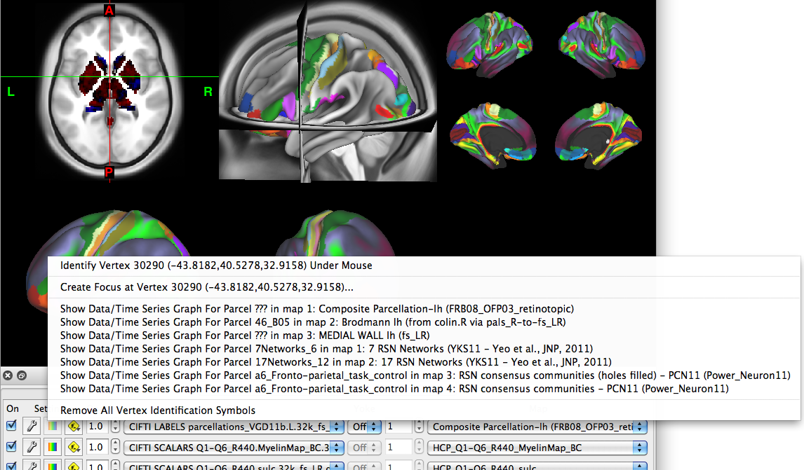

Mouse Controls
Several basic surface and volume viewing and
navigation functions are controlled with the mouse and are only
active when the mouse cursor is within the Viewing
Area.
- Rotate: hold down the left
mouse button and move the mouse back and forth and up
and down. Note that the rotation function is not active in Volume
View. All other mouse controls are active in
all views.
- Zoom: press the
Command/Ctrl key + the left mouse button
and move the mouse up and down. If you have a mouse wheel, you
can also scroll up to zoom out or scroll down to zoom in.
- Pan: (move the brain
surface to a different part of the Viewing Area), press
the shift key + the left mouse button
and move the mouse left, right, up, or down.
- ID: To identify a brainordinate,
click on the brain surface or volume slice. A sphere will
appear where the surface was clicked. Also, the Information
window will pop up, showing information on
the particular vertex/voxel that was clicked.
- The color and size of the ID sphere can
be adjusted using the Properties
button in the Information window.
- Reclicking on the sphere deselects that
brainordinate and the sphere will disappear.
- Right clicking on a
surface or volume slice, brings up a menu of
options depending on what is loaded (see images).
- Right clicking in the Viewing Area,
but not on a surface or volume, pops up the single option to
Remove All Vertex Identification Symbols.

